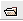
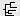

Note: This still works for November 2013 version
Note: In November 2013 version, these are now in the "Layout" rather than the "Tree" menu
Dendroscope is a phylogenetic tree viewer. Thus, it is not designed to estimate trees, or to alter/edit the topologies of already-estimated trees.
The software can be downloaded from the University of Tuebingen, Germany, where it is developed. The software is available for all three major operating systems. For more information, check out the 2007 and 2012 articles describing the software.
Dendroscope can display trees where edges are labeled using square brackets i.e. [...]. For example, the following tree has the label "mammals" attached to the internal branch grouping the mouse and human OTUs
((human,mouse)[mammals],frog);
Indeed, after adding labels to branches of a tree using Dendroscope, the software uses square brackets in exactly this way if you export the tree in NEWICK format.
However, Dendroscope cannot display trees where the implicit branch ancestral to the root is labeled in this way. For example, the following tree would not open in Dendroscope, due to the [tetrapods] label at the root.
((human,mouse)[mammals],frog)[tetrapods];
Therefore, NEWICK format trees imported from other sources may need to be edited before they can be viewed in Dendroscope - for example, trees exported from TreeFam have the root labeled in this way - this must be removed before the tree is examined in Dendroscope.
This is an example of a NEWICK format file that can be read by Dendroscope. The tree was obtained from TreeFam (and edited as described above to be readable by Dendroscope)
This is an example of a large NEWICK format file, with more than 800 terminal nodes. It too was retrieved and slightly modified from TreeFam.
After making changes to the way a tree is represented in Dendroscope, you can save a file in native Dendroscope format. When opened by Dendroscope, this file will show the same tree that you saved with the same formating etc. as when you saved it.
This is an example of a Dendroscope format file.
The graphical user interface (GUI) for Dendroscope should look similar to the image shown below. The following components of the GUI are labeled
Note: The above description was for a version before the November 2013 release; while similar, the November 2013 release doesn't include the side bar, but adds an additional "messages" window that provides information on the commands issued by us to Dendroscope
There is more than one way to open a file
- File -> Open - Use the "Open Tree File" icon 
and then select file to be opened using you operating system's menus
Note: in the November 2013 version, I am unable to open any tree file that does not have the name ending ".txt"; thus, if trying to load a tree from a file with a different name ending, rename (or make a new copy of) the file to add ".txt" to the end of it e.g. if your file is named "TF105137_seed_DendroscopeExample.ph" you could rename it to "TF105137_seed_DendroscopeExample.ph.txt" and Dendroscope should be able to load it
To help present a large phylogeny in an uncluttered way, by default Dendroscope chooses to hide from view many of the taxa labels on a tree (where the labels would be overlapping and thus difficult to read) - this is controlled by the option:
View -> Sparse Labels
However, if you are searching for a taxon-label corresponding to a particular sequence of interest, this can be problematic: the label you are looking for may have been hidden by Dendroscope.
Therefore, you will often want to switch off this option by simply selecting the View -> Sparse Labels option (if there is a tick after the option, then labels are being hidden)
Note: Above instructions still work for November 2013 version
There are two ways of doing this:
To view a tree so that it is shown with a root, and with branch-length information included in the representation, do one of the following: - Tree -> Draw Rectangular Phylogram (i.e. using the "Tree" menu) - Choose the  Toolbar icon
This is the default representation on some versions of Dendroscope. To view a tree so that it is shown with a root, but with branch-length information ignored in the representation, do the following:
Depending on the number of left mouse-clicks you give to a branch/node you can select
Multiple branches/nodes/labels can be selected/de-selected by left mouse-clicking while holding the SHIFT key. The image below shows several branches, nodes, and labels highlighted.
Note: In November 2013 version, these instructions are still valid, although they seem to be somewhat erratic i.e. I may have to try 10 times before the double or triple click does what I want
Left-click with the mouse on the branch or node you want to place the root on to select it and then either:
Note: This still works for November 2013 version
To rotate branches (which does not change the topology of the tree, only the way it is represented)
Left-click with the mouse on the node (doesn't work i.e. won't let you choose to "Swap Subtree etc. if you select a branch instead of a node!) you want to rotate around to select it and then either:
Note: This still works for November 2013 version
To change the colour/thickness/font etc. of selected nodes/branches/labels do:
This brings up the "Format" window shown below
From here you can, for example:
See the image below for an example of such editing.
Note: This still works for November 2013 version
It is possible to add text-labels to branches - for example to supply the name of a clade - e.g. vertebrates - associated with a particular group:
For example, the image below has a label added to the thick yellow branch.
By simply left-clicking with the mouse and dragging it is possible to change the position of any of the labels (either branch labels as above, or the taxa labels at the end of branches. These labels remain attached to their branches and will move accordingly following rearrangements of the tree.
Note: This still works for November 2013 version
Using a "text" command:
Using a menu item:
You can save the representation of your tree in a format that is read only by Dendroscope - this file can be reloaded into Dendroscope at a later date, and will have exactly the same set of rearrangements and formating as the trees in Dendroscope when the file was saved. You can do this using either of:
If you are looking to save the image for use in preparing a figure, then use File -> Export Image and save the file in either EPS or SVG format (to maintain it as a set of vectors rather than reducing it to a set of pixels as the other formats do)
The resulting file can then be loaded into a range of different software such as Adobe Illustrator to prepare a file version of a figure for publication/presentation.
Note: This still works for November 2013 version
Trees obtained from some sources, such as TreeFam, have information annotated/associated with tree branches that can sometimes make the shape, and other features, of the tree difficult to read/interpret. Thus, if we're not interested in reading this information, we usually turn off the representation of this information using the "View" menu:
Note: for November 2013 version, you need to firstly select (e.g. with Ctrl (or cmd on mac) - A or Select -> Select all) the branches/edges you want to remove labels from, and then uncheck View -> Show edge labels** **
Below is an example of a tree with edge labels shown
Dendroscope with edge labels shown
And here with the labels hidden - this makes the tree topology and other features of the tree much easier to read/identify
Dendroscope with edge labels hidden
Note: This does not seem to work** for November 2013 version**
To change the angle at which branches are drawn in the typical unrooted tree representation:
Unrooted tree
Unrooted tree, subtree selected
Unrooted tree, subtree selected, angle changed
Note: This still works for November 2013 version
Author: Aidan Budd